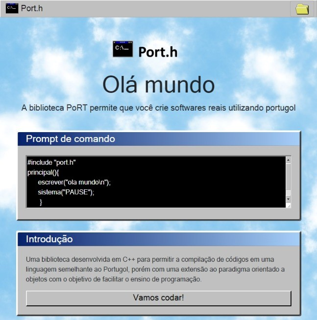
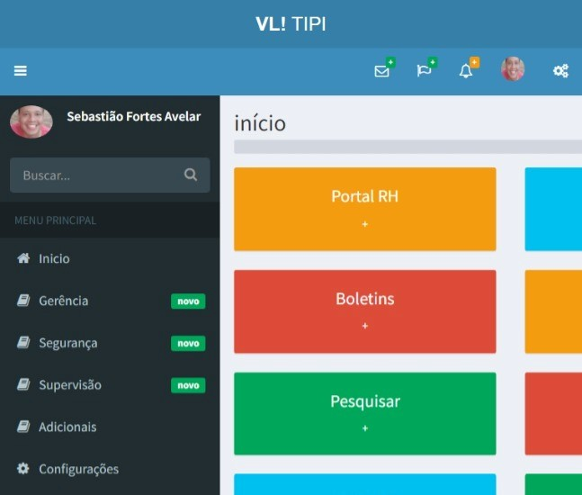
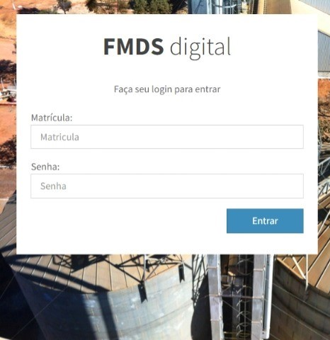

Projeto port.h
O projeto porth.h é uma biblioteca open-source desenvolvida em C++ para permitir a compilação de códigos em uma linguagem semelhante ao Portugol, porém com uma extensão ao paradigma orientado a objetos, ela foi criada com o objetivo de facilitar o ensino de programação.
Problema: Para quem está começando a aprender a programar nota-se que a abstração de “rodar o chinês”, ou seja, de executar um programa apenas no papel, é um grande obstáculo (quase intransponível para alguns) no aprendizado das técnicas de elaboração de classes, funções, métodos e objetos. Por outro lado, submeter um iniciante aos rigores de uma linguagem de programação como Java ou ao “esoterismo” do C++ também é exagerado.
Solução: A solução se apresenta com uma linguagem mais simples, parecida com o "Portugol", de grande popularidade nos meios acadêmicos e presente nos livros mais utilizados; com ela, os princípios básicos tanto da programação estruturada qanto da programação orientada a objetos podem ser ensinados sem que a curva de aprendizagem seja íngreme.
Tecnologias:
C++ e Assembly

Rede VLI
Implantado na unidae Pirapora da VLI logística o aplicativo Rede VLI é um ERP implementado sob a forma de aplicativo web desenvolvido para facilitar a análise de dados para a obtenção de insights sobre a produção.
Problema: As informações relevantes para o processo produtivo da unidade ficavam dispersas em muitos locais como planilhas de excel e mensagens de email, o que muitas vezes atrasava ou impedia a obtenção dessas mesmas informações.
Solução: O app traz a solução concentrando as informações de produção em um único lugar. As informações passaram a ser obtidas de forma automatizada por meio da instalação de macros nas planilhas excel já utilizadas, tal técnica permitiu a inserção do app aos processos da empresa sem causar prejuízos de adequação. As planilhas se conectam com as APIs de comunicação do app para realizar o envio de informações para um banco de dados na nuvem.
Premiado na convenção regional de melhoria contínua FCA/VLI de 2019.
Tecnologias:
Javascript, Bootstrap, PHP, MysQl

FMDS Digital
Aplicativo web pioneiro no gerenciamnto remoto do chão de fábrica.
O FMDS digital foi desenvolvido e implantado na unidade Pirapora da VLI logística para realizar o gerenciamnto do chão de fábrica de forma remota em virtude da pandemia do COVID-19.
Problema: Em virtude da pandemia do COVID-19 as reuniões semanais realizadas com os colaboradores do chão de fábrica foram suspensas, fato que dificultou o gerenciamento dos indicadores e a gestão participativa com os empregados.
Solução:
A solução foi a criação de um aplicativo para a exibição e o gerenciamnto dos indicadores relativos ao FMDS. O sistema organizava os indicadores em conco principais pilares onde é possível fazer a atualização e conferência das informações.
Tecnologias:
Javascript, Bootstrap, PHP, MysQl